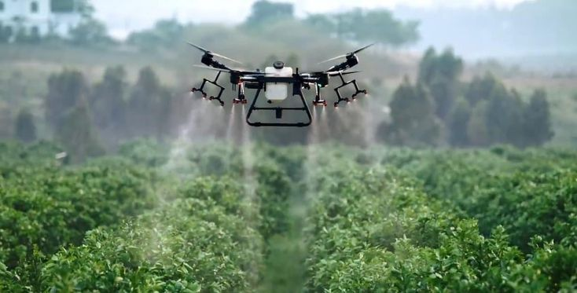

40ha/dia
Cobertura média
98%
Precisão nas aplicações
30%
Economia de insumos
36 km/h
Velocidade operacional
SOBRE NÓS
A BIOTERRA nasceu com o objetivo de transformar o agronegócio por meio da tecnologia e da inovação sustentável. Utilizando drones agrícolas de alta performance, sensores inteligentes e análise de dados em tempo real, oferecemos soluções que aumentam a produtividade, reduzem desperdícios e promovem uma agricultura mais eficiente e sustentável.

Sobre o serviço
A pulverização inteligente com drones utiliza tecnologia avançada para garantir aplicações precisas, uniformes e seguras. Os drones são equipados com sensores de última geração e navegação RTK, proporcionando maior eficiência operacional e menor impacto ambiental.
Soluções inteligentes para o campo
BIOTERRA
Soluções tecnológicas que impulsionam o agronegócio de froma sustentável e eficiente
Contato
Entre em contato para saber mais.
- Whatsapp: (73) 11111-1111
- Email: contato@bioterra.com
- Instagram: bioterra.agricola